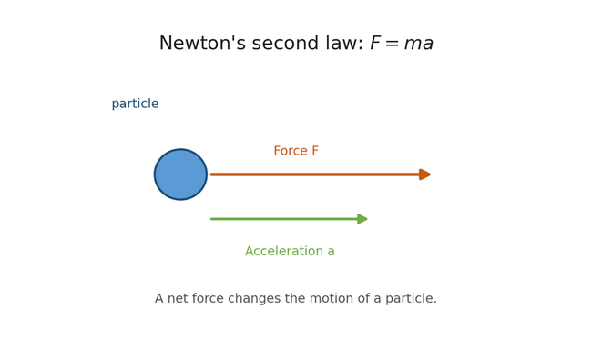
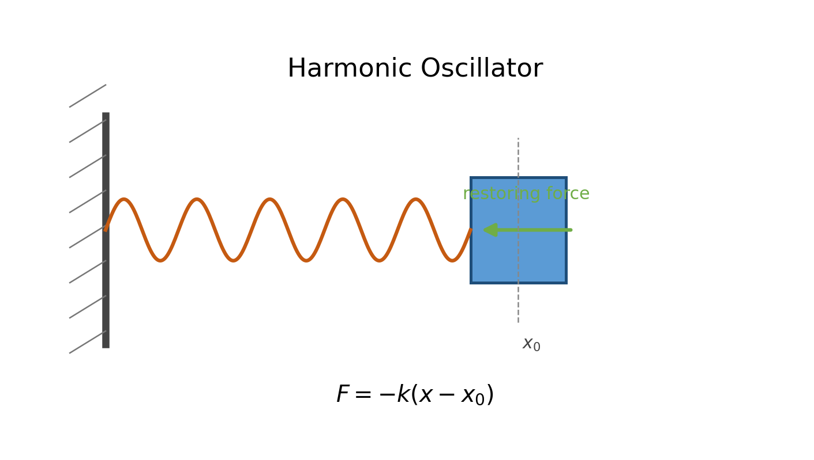
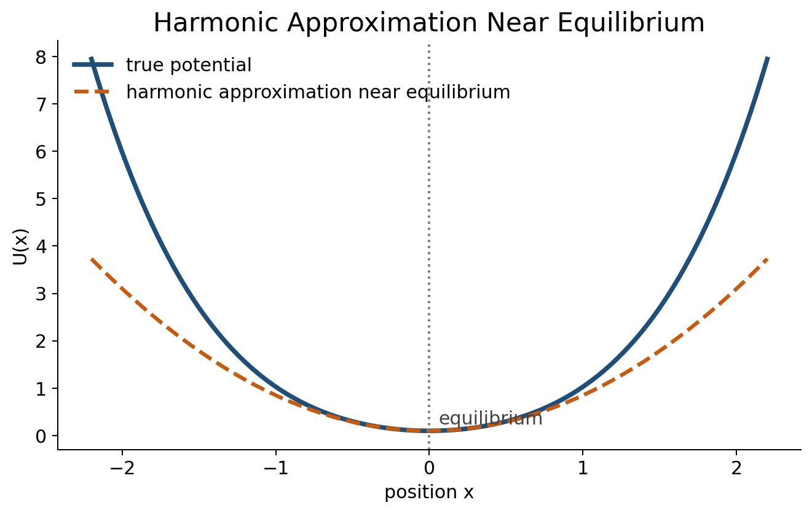

Newton's second law
\[F = ma\]
Classical motion begins with the relation between force, mass, and acceleration. From position x(t), we define velocity and acceleration as time derivatives.

Kinetic energy
\[K = \frac{1}{2}mv^2\]
Kinetic energy measures how strongly a particle is moving. It connects naturally to work and force through differential motion.
Potential energy
For conservative systems, force can be defined from the potential:
\[F(x) = -\frac{dV(x)}{dx}\]
Harmonic oscillator
\[V(x) = \frac{1}{2}k(x-x_0)^2\]
This is the central approximation used in ENMs: near equilibrium, many interactions can be approximated as springs.

Harmonic approximation near equilibrium
Even when the true potential is complicated, near an equilibrium point it can often be approximated by the quadratic form above.
